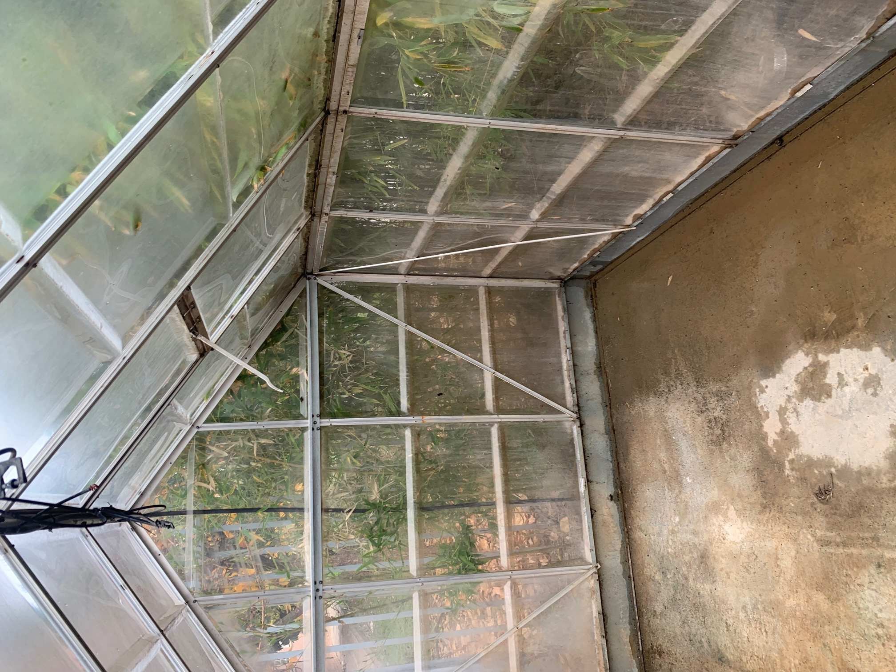
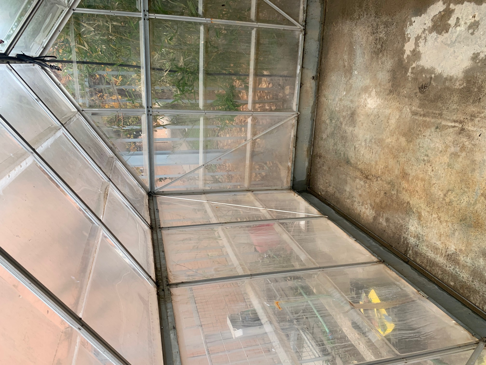
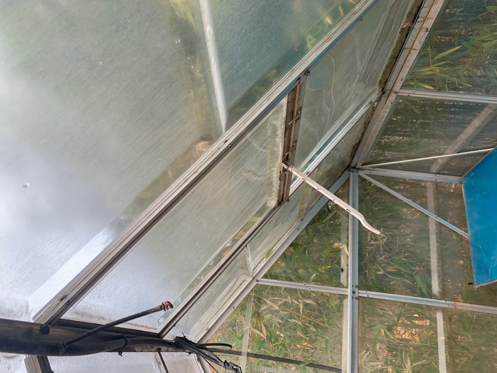

Puesta a punto del Invernadero
Como se ha señalado en la introducción de este proyecto, el invernadero se encuentra en situación de abandono, y el primer paso ha sido adecentarlo para su posterior puesta en marcha.
|  |  |  |
Tras la retirada de los escombros y basura acumulada durante años hemos conseguido disponer de un espacio idóneo para desarrollar nuestro proyecto.
El espacio de trabajo es de 5m de largo por 3m de ancho, una superficie de 15 metros cuadrados. El material del invernadero es policarbonato y aluminio y el estado del mismo es deteriorado pero aún apto para ser utilizado. El inconveniente principal es la falta de luz porque está en la cara norte de un aulario y además está rodeado de bambú y otros árboles de gran porte que le quitan la mayor parte de la luz directa, hecho que nos condiciona el tipo de plantas que se pueden cultivar.